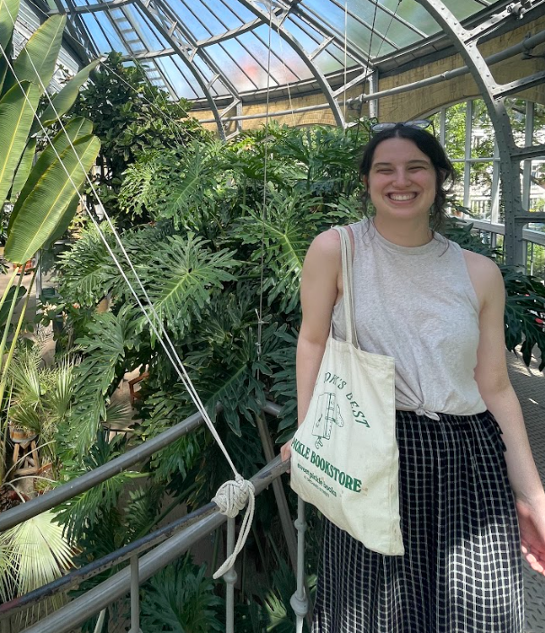

I am a recent graduate of Wellesley College, where I studied Data Science and English. There is a special place in my heart for data analysis and computing with natural language. I especially love research looking at literature and music!
In more recent professional experience, I have done work in the fields of environmental science and bioinformatics. I do ongoing work as a research assistant with the New England Flying Squirrel Network, where I have been mapping species distribution and predicting key habitat factors.
Alongside peers and faculty in the Wellesley Department of Computer Science, I also contributed code and exploratory analysis of machine learning applications to Popcorn, a method of prediction for coding ability in prokaryotic gene sequences.

contact via email: ajkyrouz [at] gmail [dot] com
or check out other ways to connect with me
For more detailed professional experience, you can view my resume.
go home